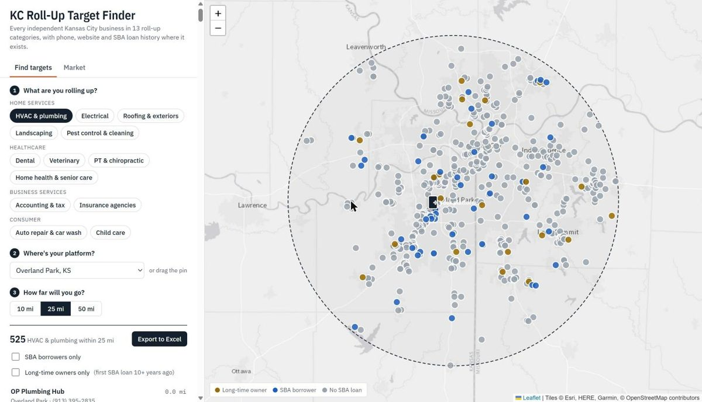

Try it · public data
KC Roll-Up Target Finder
A deal-sourcing tool for roll-up private equity. Pick an industry, drop your platform company on the map, and get every independent business nearby as an add-on target list.
9,000+KC businesses
13roll-up categories
Monthlyauto-refresh
- Each business gets a profile: phone, website, years in business, retirement-plan headcount, SBA loan history, and whether it already belongs to a PE-backed platform.
- Combines four free sources (Overture Maps, SBA loan data, company websites, DOL Form 5500 filings), refreshed by a scheduled GitHub job.
- Exports a formatted Excel target list.